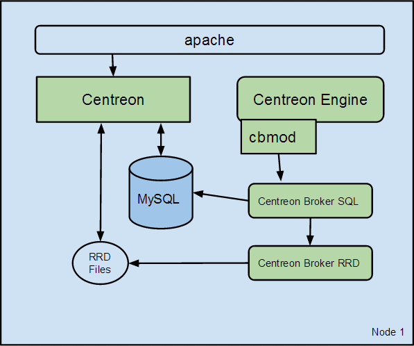

Simple architecture¶
Description¶
The simple architecture is to have all oversight entities within the same server, ie:
- Centreon web interface
- Databases (MySQL + RRD)
- Monitoring Engine
- Broker
This architecture is the simplest a user may encounter.
Components¶
Many components are used to build this architecture:
- Apache web server for Centreon web interface
- MariaDB databases to store Centreon configuration parameters as well as monitoring and performance data
- A monitoring engine to collect data
- Collected data are sent to Centreon Broker SQL using cbmod by monitoring engine
- Centreon Broker SQL allows to store information into MariaDB databases and forward them to Centreon Broker RRD
- Centreon Broker RRD generates and updates RRD files with data in order to display performance graphs
Architecture¶
The diagram below summarizes the architecture:
